Get a new hire's account, tool access and equipment ready, so they can work from day one.
Draft. The access steps come from our tools. The steps in this box are general practice, not from a tool. Saul to confirm them.
First do Before day one in the yellow Draft note at the top. Then decide which department and tools the job needs. What each role gets shows which pages each role opens, and What each Tools Hub tile is for says what each tool does. Then give access, one tool at a time.
Dev PLM is our web tool for samples and orders.
Screenshots use made-up sample data. Click any picture to see it larger.
Microsoft Entra is Microsoft's admin site for accounts and app access. You need admin rights there. If you don't have them, ask Saul.
Go to Enterprise applications. It's in the left menu, and it may read Enterprise apps. Or type it in the search box at the top. Open the app for Dev PLM. Other apps' names start the same way, so check the name, and ask Saul if you're not sure. Then click Users and groups.
Click Add user/group. Click None Selected, pick the person and click Select. Then click Assign. Nothing saves until you do. Without this, they can't sign in to Dev PLM.
Their Microsoft account has to exist first, or the next steps can't find them. If it doesn't exist yet, ask Saul.
Click Open Users & permissions at the top of this guide. In Dev PLM's side menu it's under Work. To open it you need Admin features, Dev PLM's admin rights, and rights in that page's own column on the Permissions tab. The Admin role has both. If you can't open it, ask Saul.
On the People tab, + Employee is at the top 1.
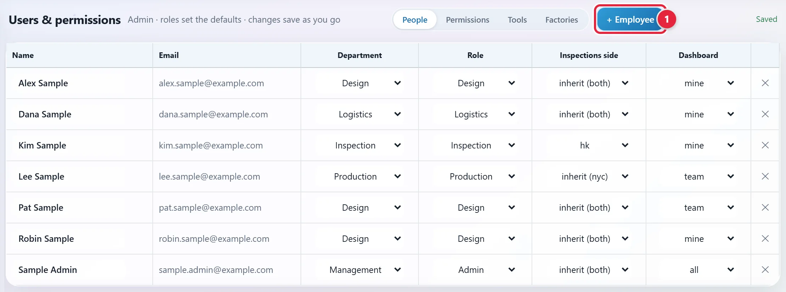
Type at least two letters of their name or email. Click their name in the list 1.
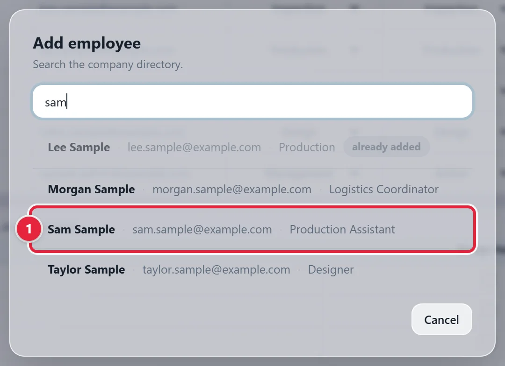
A name marked already added is on the list already. Nobody in the directory matches means the search found no account, so check the spelling. An external / guest label beside the name means it isn't a company account, so check before you add it.
Both dropdowns start on Production, so look at both. Pick the Role first 1, because it changes the department to match. Then look at the Department 2. Click the button with their name, such as Add Sam Sample 3.
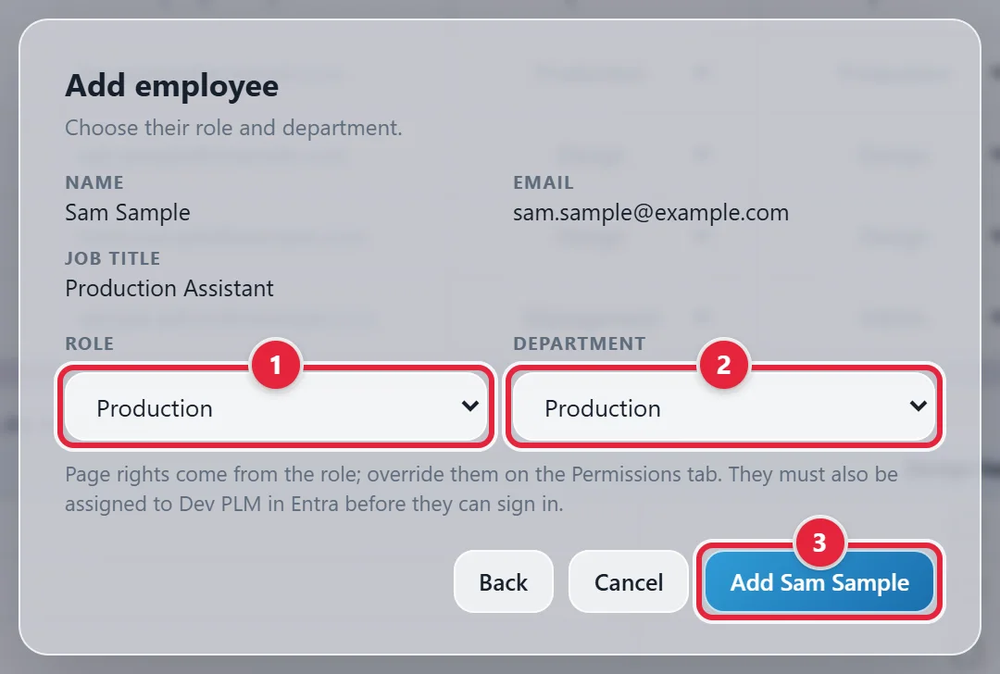
The role sets which pages they get. See What each role gets. The Admin role also turns on Admin features: Preview tools, the Live switch and managing people. Check the tool is Live explains Preview and Live.
A message at the bottom says they were added, and their row is on the list 1. Dev PLM saves on its own, so there's no Save button. Saved shows at the top right.
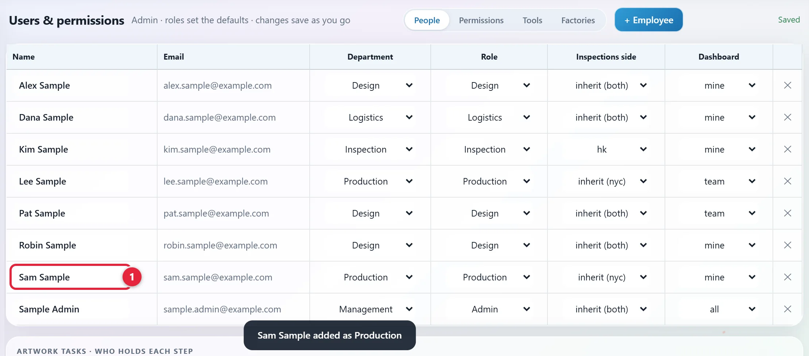
Click the Permissions tab and find their row. Each column is a page. To change a page for this person only, pick none, view or edit 1. A value with a dot, such as view · 2, comes from their role. A dash with a dot means none. To go back to the role's value, pick the top choice, the one with the dot.
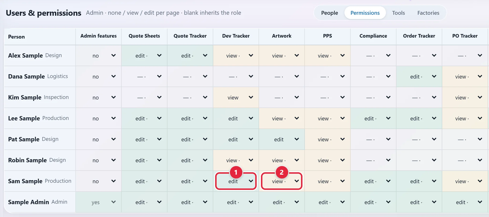
Scroll right for more pages, such as Reports. Leave a page alone if the role's value is right.
Click the Factories tab. A person sees only the Dev Tracker rows of the factories ticked here. Admins see every row. A dimmed row has no Dev Tracker rights yet, so you can skip it. Factory not listed? See Add a factory or change its email.
Leave Factories on assigned 1 and tick each factory they work with 2. Or pick all, for every factory, new ones too, and the rows with no factory. The number under each factory 3 shows how many people see its rows now.
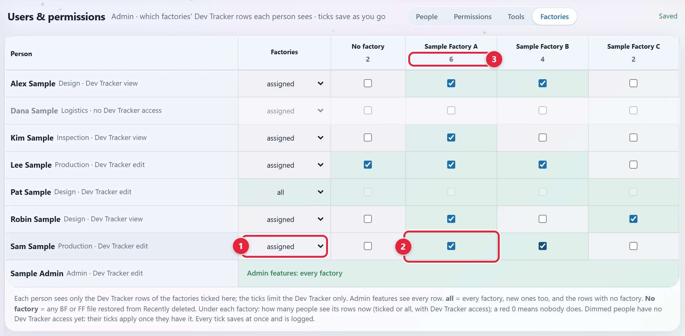
Click the Tools tab. A tool on Live 1 opens for everyone with rights on it. A tool on Preview 2 opens only for admins, so a new hire won't see it even with rights. Today the Order Tracker, the Dev Tracker and Reports are Live. Scroll down for Reports.
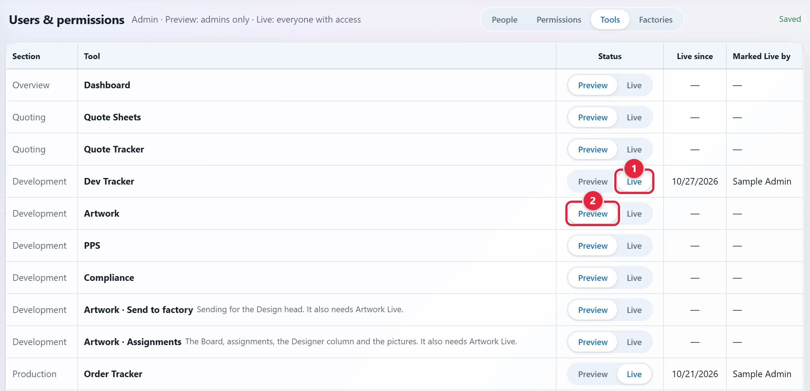
If a tool they need is on Preview, they can't use it yet. Ask Saul.
Go back to the People tab and scroll down to Artwork tasks. Artwork isn't open to the team yet, so most new hires don't need this. See Artwork.
Tick Design head 1 for the person who sends artwork to factories and assigns designers. They also need edit on Artwork and the Dev Tracker, and all on the Factories tab. A grey needs note beside the tick says what's missing.
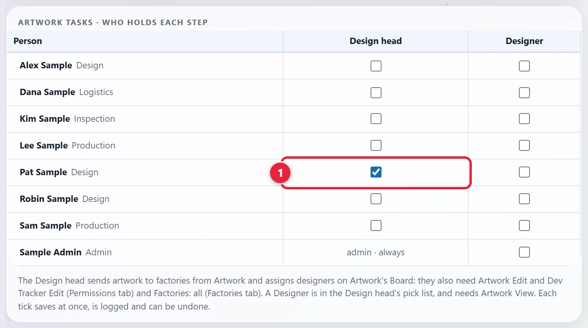
Don't tick Designer for anyone until Saul says Artwork is Live. A ticked designer will lose the Dev Tracker, Reports, the Order Tracker, Factories and the Change log. An amber note at the bottom of the card says this too. This picture leaves it out.
Access to the SOP Hub is by a role in Entra.
In Microsoft Entra, go to Enterprise applications and open the SOP Hub's app. Saul to confirm its name, so if you can't tell which app it is, ask him. Then click Users and groups.
Click Add user/group. Click None Selected, pick the person and click Select. Under Select a role, pick the viewer role for their department, as in this list. Then click Assign.
| Role | What they get in the SOP Hub |
|---|---|
| The Design viewer role | The Design department |
| The Sales viewer role | The Sales department |
| The Production viewer role | The Production department |
| The Logistics viewer role | The Logistics department |
| The Finance viewer role | The Finance department |
| The HR viewer role | The HR department |
| The viewer role for all departments | All departments |
| The SOP Hub's admin role | All departments, plus Edit to change steps, owners and guides |
Someone who works in two departments can hold two roles. For a second role, do this step again.
If they aren't on the app's list, Microsoft may refuse them at sign-in. If they get in with no SOP role, the hub stops them on this screen. After you add the role, they sign in again.
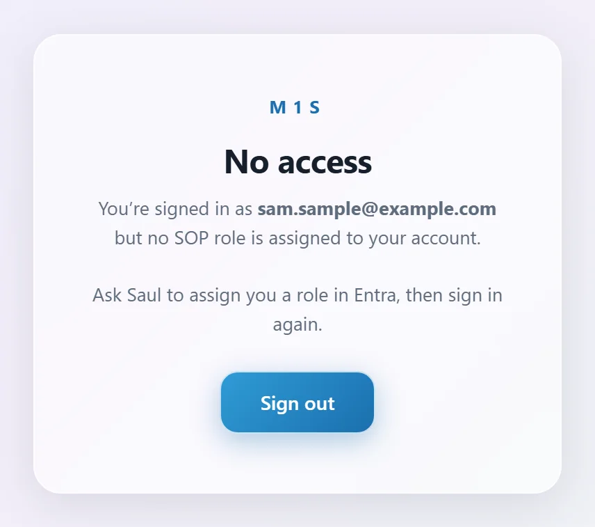
A person sees a card on the Tools Hub only for the tools ticked for them.
Click Open Tools Hub at the top of this guide. Manage access is at the top right 1. If you don't see it, ask Saul.
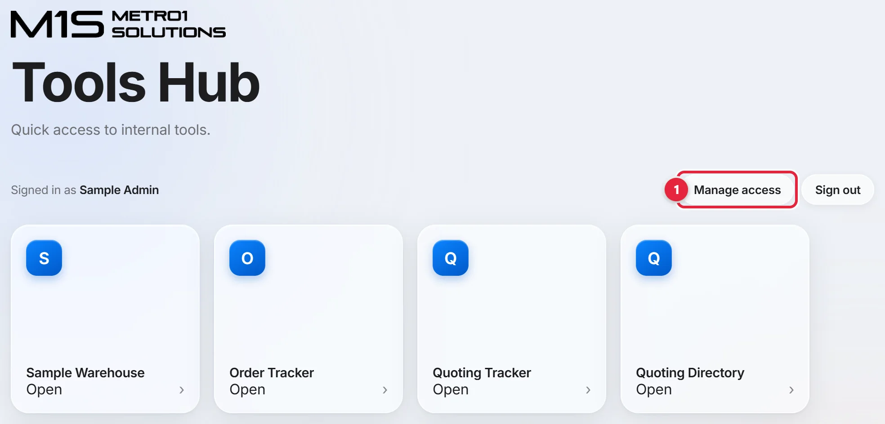
People appear on this list after they sign in once. If they aren't there, type their email 1 and, if you like, their name. Click Add person 2.
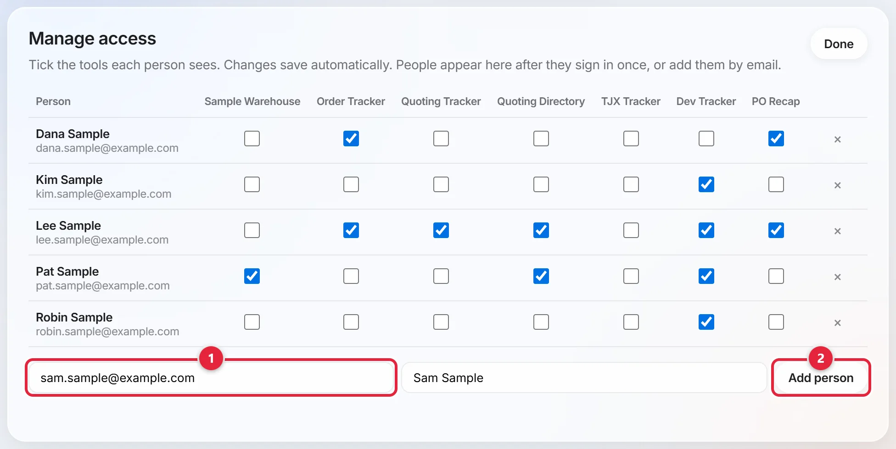
Find their row. Each column is a tool. Tick the ones the job needs 1. What each Tools Hub tile is for says what each one does. It saves on its own, and All changes saved shows near the top. Your list may have more tools than this picture.
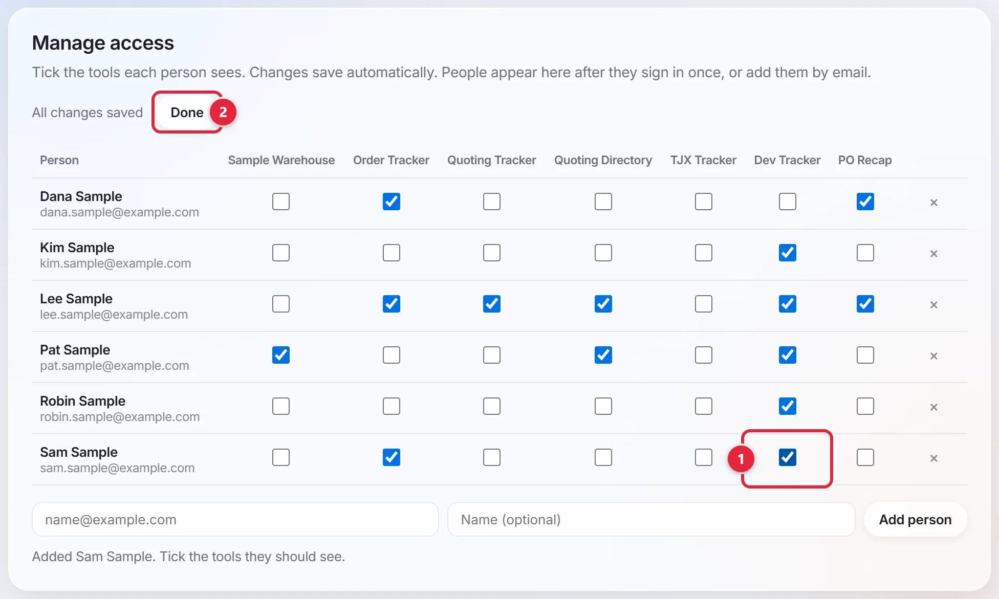
Done is at the top of the panel, marked 2 in the picture above. It closes the panel. Next time they open the Tools Hub, they see a card for each tool you ticked.
Some tools have their own sign-in and access. Ask them to open each tool the job needs.
Ask what they see. The message tells you which step was missed.
| What they see | What's missing | What to do |
|---|---|---|
| Microsoft says they aren't assigned to the app | The Entra step | Add them to that app in Entra |
| Not added yet in Dev PLM | They aren't on the People tab | Add them with + Employee |
| No tools are open to you yet in Dev PLM | Rights on a Live tool | Give them rights on the Permissions tab |
| A tool isn't in their Dev PLM menu | The tool is on Preview, or they have no rights on it | Check the Tools tab and the Permissions tab |
| No factories are assigned to you yet. on the Dev Tracker | Factory ticks | Tick their factories on the Factories tab |
| Your reports are empty on Reports | Factory ticks | Tick their factories on the Factories tab |
| Read only beside the page's name in Dev PLM | Edit rights on that page | Pick edit on the Permissions tab, if the job needs it |
| No access in the SOP Hub | An SOP role | Add a role in Entra |
| No tools assigned yet in the Tools Hub | Ticks in Manage access | Tick their tools in Manage access |
| Could not load your tools in the Tools Hub | Access to the SharePoint site the hub reads | Ask Saul |
Not added yet in Dev PLM:
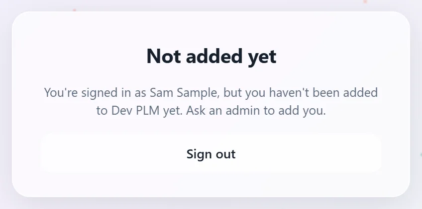
No tools are open to you yet in Dev PLM:
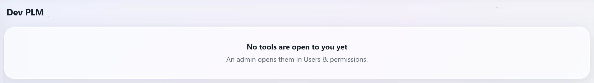
No factories are assigned to you yet. on the Dev Tracker:
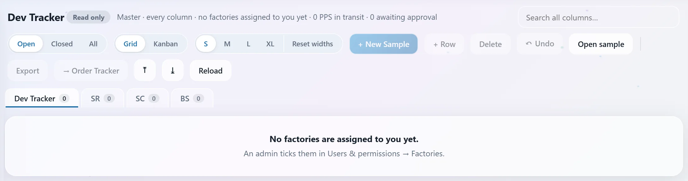
Your reports are empty on Reports:
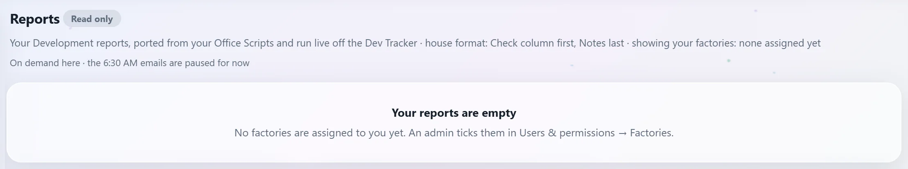
No tools assigned yet in the Tools Hub:
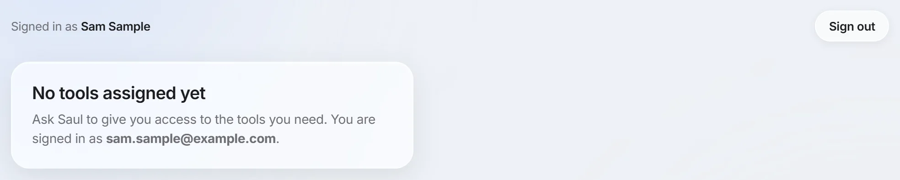
Could not load your tools in the Tools Hub:
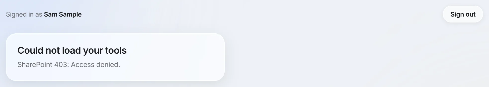
The tiles are kept on the Tools Hub itself, so your list may differ. Saul to confirm which of the tools with no guide need one, and who uses them.
| Tile | What it's for | Guide |
|---|---|---|
| Sample Warehouse | Sample boxes: what's in each box, scanned by UPC | Warehouse Receiving |
| Order Tracker | Confirmed orders and their items | Order Placement |
| Report Runner | Run a report, then Download it or Email me | No guide yet |
| Factory Emailer | One message to many factories, one email each, from your own mailbox | Container Planning & Logistics, Add a factory |
| Quoting Tracker | The one log of new items | Item Intake & Quoting |
| Quoting Directory | Quote sheets: make them, send them, compare prices | Quoting Out to Factories |
| Ecom Allocation | What the web store needs this week, what sells out before restock, and what can come back to wholesale | No guide yet |
| TJX Tracker | The weekly TJX reports, open orders and reorders | Order Tracking |
| Fragrance Library | Factory samplers, and the scents picked for each style | Add a scent |
| Dev Tracker | Samples and approvals | Development & Sample Tracking |
| PO Recap | Checks a customer's POs against its files | Compliance & Routing |
| PO Book | What's on order with the factories, and what has shipped | Production & PO Tracking |
| Late & Short | The daily view of orders at risk | Order Tracking |
| Shalam Tool | What we can sell, where the goods are, and when they can be pulled from China | Inventory Report |
| Sales Projects | Sales projects, with their styles from the Quote Tracker | No guide yet |
These are the role's values for the pages in Dev PLM's side menu. Preview pages open only for admins today. On a phone, swipe this table to see the rest.
| Page | Design | Production | Inspection | Logistics | Admin |
|---|---|---|---|---|---|
| Dev Tracker | view | view | none | none | edit |
| Order Tracker | none | edit | none | edit | edit |
| Reports | view | view | view | view | edit |
| Artwork (Preview) | view | view | none | none | edit |
| Factories (Preview) | edit | edit | view | view | edit |
| Dashboard (Preview) | view | view | view | view | edit |
| Change log (Preview) | none | none | none | none | edit |
Inspection and Logistics have view on Reports, but it stays out of their menu until they have rights on the Dev Tracker too.
Users & permissions opens only for people with Admin features and rights in its own column, the last one on the Permissions tab. Only the Admin role has those rights from the start. Recently deleted needs Admin features alone.
| Column | What it does |
|---|---|
| Name | Their name. You can type over it. |
| From the directory. It can't be changed here. | |
| Department | Their department. |
| Role | Sets their rights on each page: Design, Production, Inspection, Logistics or Admin. Moving someone onto Admin turns Admin features on. Moving them off turns it off. |
| Inspections side | nyc, hk, both or inherit from the role. The Inspections page isn't in Dev PLM yet, so this changes nothing today. |
| Dashboard | What the dashboard shows: mine (only items routed to them), team (their whole department) or all (the whole company). The Dashboard is in Preview, so the team doesn't see it yet. |
| ✕ | Removes them. See Remove them from Dev PLM. |
| Value | What it means |
|---|---|
| Any value with a dot | It comes from their role. A dash with a dot means none. |
| none | They can't open the page. |
| view | They can read it, not change it. |
| edit | They can read and change it. |
| Admin features | yes gives Preview tools. They also need rights in the Users & permissions column, the last one: view to reach the Live switch, edit to manage people. The Admin role already has that edit. The box is grey for the last admin and for yourself. |
| Word | What it means |
|---|---|
| assigned | Only the factories ticked on their row. |
| all | Every factory, new ones too, and the rows with no factory. |
| No factory | A tick for the Dev Tracker rows with no factory. |
| Number under a factory | How many people see its rows now. A red 0 means nobody does. Admins aren't counted. |
| Dimmed person | No Dev Tracker rights yet. Their ticks apply once they have them. |
| Admin features: every factory | Admins see every row, so they have no ticks. |